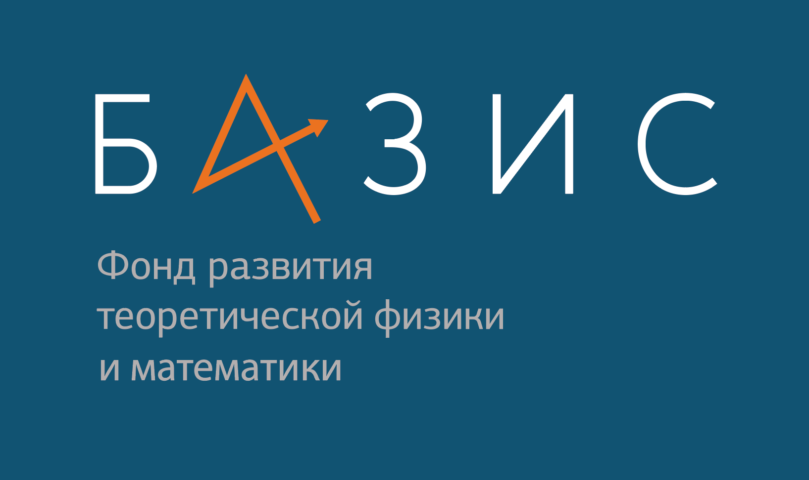
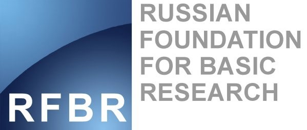
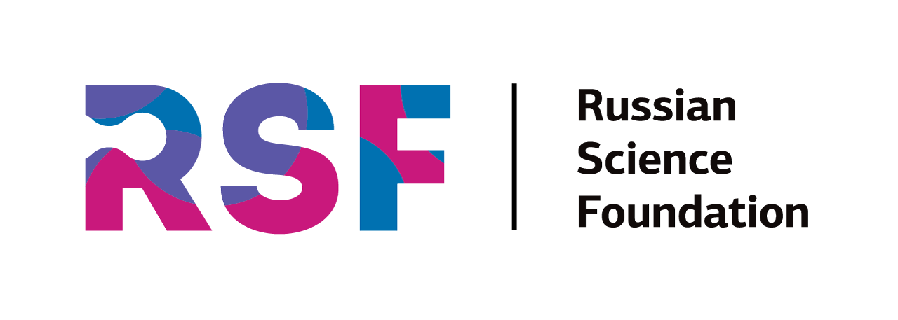

Ilya V. Gorbenko
gorbenko.ilya.v@gmail.com
Current Positions
 | Ioffe Institute Division of Physics of Dielectric and Semiconductors, Jr. research fellow |
Research Interests
- 2D plasma strustures
- Field Theory
- Anderson localisation
Education
| B.D.: 2019, St.Petersburg Polytechnic University: Institute of Physics, Nanotechnology and Telecommunications | |
| M.D.: 2020-..., ITMO University: Semiconductor physics |
Publications
| Google Scholar |
Diploms and grants
|  | Foundation for the advancement of theoretical physics BASIS. |
|  | Russian Foundation for Basis Research |
|  | Russian Sience Foundation |